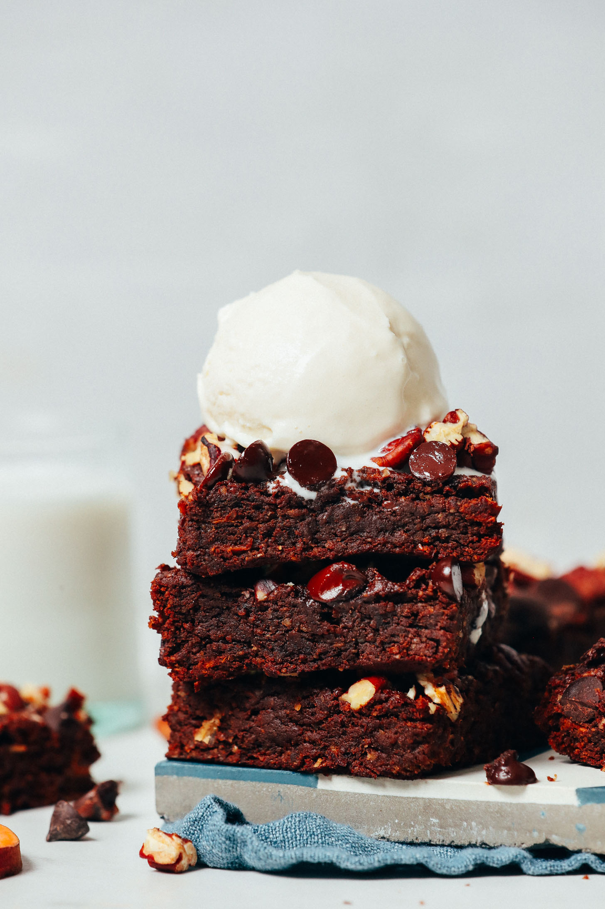

Fudgy Sweet Potato Brownies

Incredibly fudgy sweet potato brownies with cacao, almond butter, and oats. Naturally sweetened with maple syrup and topped with pecans and chocolate chips for the ultimate healthier treat!
Ingredients
- 1 cup sweet potato purée (see instructions)
- 2/3 cup maple syrup
- 1/2 cup almond butter or peanut butter
- 1 tsp pure vanilla extract
- 1 ½ Tbsp avocado oil (or sub melted vegan butter, melted coconut oil, or olive oil)
- 1/2 cup cocoa powder or cacao powder
- 1/4 tsp sea salt
- 1 tsp baking powder
- 2/3 cup oat flour
- 1/2 cup chopped raw pecans (or sub walnuts, but we liked pecans better)
- 1/4 cup dairy-free chocolate chips (optional)
Steps
- To make sweet potato purée, halve sweet potato and brush the cut sides with oil (optional). Add to a parchment-lined baking sheet. Bake at 375 F (190 C) for ~25-30 minutes or until tender to the touch. Move to one side of pan and wrap the parchment paper over top to steam. Let steam for 5 minutes. Then peel away skin and mash in a mixing bowl (or food processor). Set aside.
- Adjust oven temperature to 350 degrees F (176 C) and line an 8×8-inch baking pan (or similar-size pan) with parchment paper. Set aside.
- To a large mixing bowl, add sweet potato purée, maple syrup, almond butter, vanilla extract, and avocado oil and stir to combine.
- Add cacao powder, sea salt, and baking powder and stir to combine. Then add oat flour and stir until a thick, scoopable batter is achieved (see photo).
- Transfer batter to your parchment-lined baking dish and spread into an even layer using a spoon or rubber spatula. Then top with pecans and chocolate chips (optional).
- Bake on the center rack (at 350 F / 176 C) for 28-32 minutes. The brownie edges should appear slightly dry and a toothpick inserted into the center should come out mostly clean (a few crumbs are okay, but it shouldn’t be overly gooey). Remove from oven and let cool in the pan for 30 minutes – 1 hour.
- Lift out of pan and slice. Enjoy warm or room temperature. Store leftovers covered at room temperature up to 3 days, in the refrigerator up to 5-7 days, or in the freezer up to 1 month. These brownies are delicious on their own but elevated with a scoop of dairy-free ice cream.